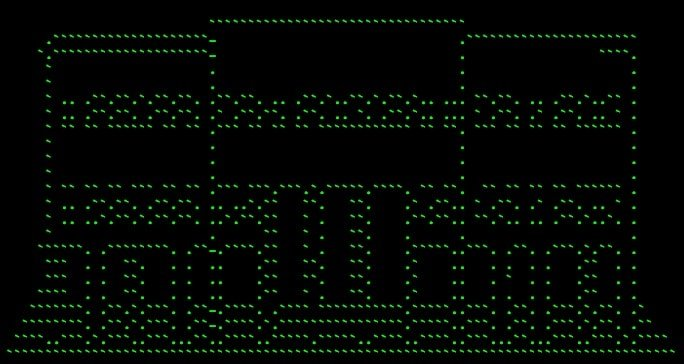
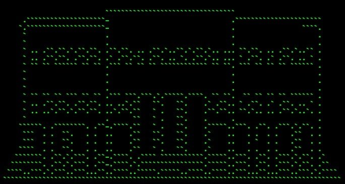
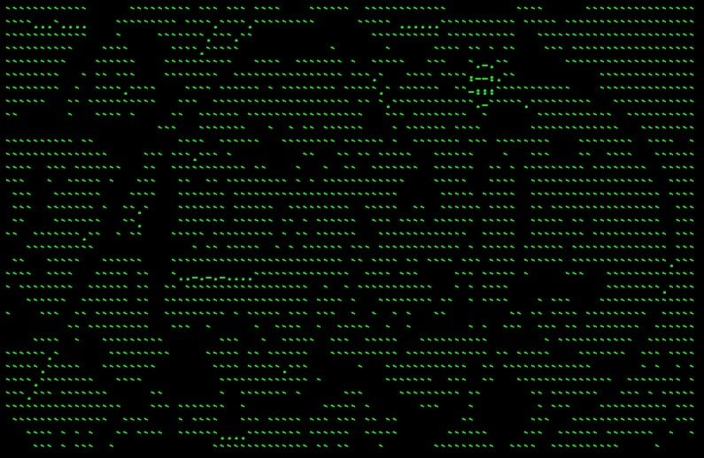

WeCode se celebrará en la Escuela de Ingeniería Informática de la Universidad de Valladolid. Dispondremos de espacio y equipamiento para poder realizar todos los tipos de talleres y charlas que componen WeCode.
Valladolid dispone de aeropuerto y AVE. A una hora en tren de Madrid y con vuelos directos desde Barcelona y Sevilla.
- place Paseo de Belén, 15, 47011, Valladolid
- map Cómo llegar
